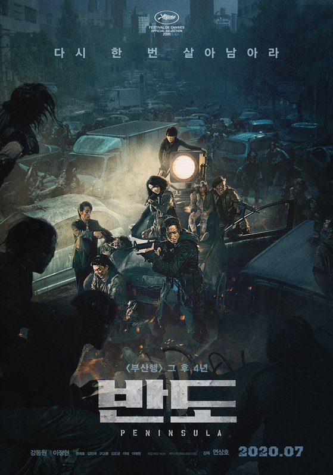

>1분기 도서: 미스 페티그루의 어느 특별한 하루, 아서씨는 진짜 사랑입니다, 빨간 구두 꺼져!나는 로켓무용단이 되고 싶었다고!, 종이 오리는 이야기꾼 한스 크리스티안 안데르센, 건지 감자껍질파이 북클럽, 루머의 루머의 루머, 허랜드, 설득, 대위의 딸 >2분기 도서: 모스 가족의 용기 있는 선택 >3분기 도서: 기찻길의 아이들, 페레그린과 이상한 아이들의 집, 할로우 시티, 영혼의 도서관
>반도